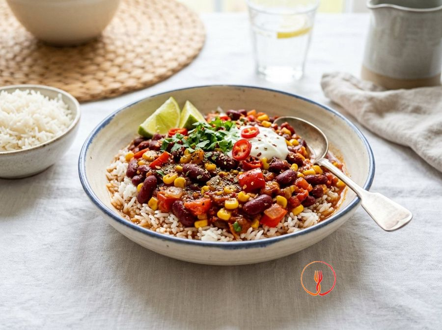

Chili di Fagioli Rossi e Mais con Riso Basmati
Un classico del 'comfort food' internazionale rivisitato in chiave economica e vegetale. I fagioli rossi e il riso formano una proteina completa, rendendolo un pasto saziante ed energetico.
Ingredienti
- Fagioli rossi in scatola (sgocciolati)480 g
- Mais dolce in scatola140 g
- Passata di pomodoro400 ml
- Riso Basmati o Ribe240 g
- Peperone rosso1 pz
- Cipolla rossa1 pz
- Cumino in polvere1 cucchiaino
Allergeni
Nessuno dei 14 allergeni principali tra gli ingredienti.
Procedimento
- Inizia sciacquando accuratamente 240 g di riso Basmati sotto l'acqua fredda corrente, utilizzando un colino a maglie fini per muovere i chicchi con le dita. Continua questa operazione finché l'acqua non risulterà completamente limpida, segno che l'amido superficiale è stato rimosso. Questo passaggio è fondamentale per ottenere un riso dai chicchi ben sgranati e non appiccicosi dopo la cottura. Il mio consiglio è di non saltare mai questo passaggio, specialmente con il Basmati, per preservarne la fragranza e la consistenza tipica.
- Porta a bollore una capiente pentola di acqua leggermente salata e versa il riso precedentemente sciacquato. Cuocilo a fuoco medio seguendo i tempi indicati sulla confezione (solitamente 10-12 minuti), mantenendo un bollore costante ma non troppo violento per non rompere i chicchi. Una volta cotto, scolalo bene e trasferiscilo in una ciotola, coprendolo con un canovaccio pulito che assorbirà l'umidità residua mantenendolo caldo e soffice. Assicurati che il riso sia al dente, poiché continuerà a intenerirsi leggermente durante il riposo.
- Mentre il riso cuoce, dedicati alla preparazione della base aromatica tritando finemente una cipolla rossa e tagliando un peperone rosso a cubetti di circa mezzo centimetro. In una casseruola ampia o un wok, scalda un cucchiaio di olio extravergine d'oliva a fiamma media e aggiungi le verdure appena tagliate. Soffriggi il tutto per circa 7-8 minuti, mescolando frequentemente con un cucchiaio di legno affinché appassiscano in modo uniforme senza bruciare. Il risultato ideale è una base traslucida e profumata, con il peperone diventato tenero ma ancora integro.
- Aggiungi un cucchiaino di cumino in polvere e 400 ml di passata di pomodoro direttamente nella casseruola con il soffritto di peperone e cipolla. Regola leggermente di sale e mescola bene per distribuire la spezia, portando il sugo a un leggero bollore a fiamma dolce. Lascia restringere la salsa per circa 10 minuti, coprendo parzialmente con un coperchio per evitare schizzi ma permettendo al vapore di uscire. Lo scopo è ottenere una base pomodorata densa e saporita, dal colore rosso vibrante e dal profumo speziato.
- Prendi i 480 g di fagioli rossi e i 140 g di mais dolce in scatola e sciacquali molto bene sotto acqua corrente all'interno di uno scolapasta. Questa operazione è essenziale per eliminare il liquido di governo, spesso troppo ricco di sodio e conservanti che altererebbero il sapore finale del piatto. Una volta ben scolati, versali nella casseruola con la salsa di pomodoro e mescola delicatamente per non rompere i legumi. Noterai come il colore giallo brillante del mais contrasti meravigliosamente con il rosso scuro dei fagioli.
- Prosegui la cottura del chili per altri 10 minuti a fuoco molto basso, mescolando di tanto in tanto per evitare che il fondo si attacchi. In questa fase i fagioli assorbiranno i sapori del cumino e del pomodoro, mentre la salsa raggiungerà una consistenza ricca e corposa, tipica di uno stufato ben fatto. Verifica che la densità sia ottimale: se dovesse risultare troppo asciutto, aggiungi un cucchiaio di acqua di cottura del riso. Il segreto dello chef è la pazienza in questa fase, perché il calore lento permette l'armonizzazione perfetta degli aromi.
- Prima di spegnere il fuoco, esegui l'assaggio finale per bilanciare i sapori secondo le tue preferenze personali. Se ami i sapori decisi, aggiungi un pizzico di peperoncino o una spruzzata di succo di lime per donare una nota di freschezza acida che bilanci la dolcezza del mais. La sapidità deve essere equilibrata, considerando che i legumi in scatola conservano spesso una nota salina residua. Il risultato deve essere un mix avvolgente, dove nessuna spezia prevarica sulle altre ma tutte collaborano alla complessità del piatto.
- Per il servizio, disponi il riso Basmati in una metà di una ciotola capiente o di un piatto fondo e versa il chili di fagioli e mais nell'altra metà. Questa presentazione separata permette a chi mangia di decidere quanto riso mescolare a ogni boccone, mantenendo i sapori distinti ma complementari. Servi il piatto fumante, magari decorando con un rametto di coriandolo fresco o prezzemolo se gradito. Ricorda che il chili è ancora più buono se lasciato riposare qualche minuto prima di essere servito, permettendo alla temperatura di stabilizzarsi.
Valori nutrizionali (stima)
| Per porzione (440 g) | Per 100 g | |
|---|---|---|
| Energia | 1833 kJ / 438 kcal | 417 kJ / 100 kcal |
| Proteine | 17.5 g | 4.0 g |
| Carboidrati | 72.8 g | 16.5 g |
| di cui zuccheri | 8.4 g | 1.9 g |
| Grassi | 6.2 g | 1.4 g |
| di cui saturi | 0.9 g | 0.2 g |
| Fibre | 12.6 g | 2.9 g |
| Sale | 1.4 g | 0.3 g |
Valori stimati con l'AI su dati medi CREA / USDA: sono indicativi e non sostituiscono il parere di un medico o di un nutrizionista.
Apri la ricetta nell'app per la lista della spesa, le schede ingredienti e i negozi vicini.